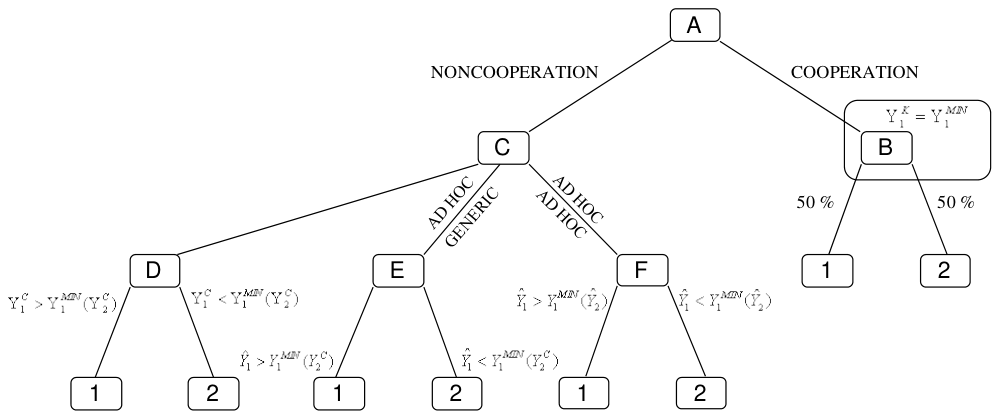

Abstract
This paper examines the microeconomic motivation of governments to provide tax incentives for foreign direct investment. Author applies the classical models of oligopoly to subsidy competition, endogenousing investment incentives, but leaving tax rates exogenous. According to the conventional wisdom, subsidy competition leads to overprovision of incentives. This paper suggests that, in the oligopolistic framework, supranational coordination can either decrease or increase the supply of subsidies. Further, in the setting of subsidy regulation, the host country’s corporate income tax rate has an ambiguous effect on the provision of incentives.

Reference: Tomas Havranek (2009), "The Supply of Foreign Direct Investment Incentives: Subsidy Competition in an Oligopolistic Framework." Prague Economic Papers 18(2): 131-155.
How to cite
Tomas Havranek (2009), "The Supply of Foreign Direct Investment Incentives: Subsidy Competition in an Oligopolistic Framework." Prague Economic Papers 18(2): 131-155.
BibTeX
@article{havranek2009subsidy,
author = {Tomas Havranek},
title = {The Supply of Foreign Direct Investment Incentives: Subsidy Competition in an Oligopolistic Framework},
journal = {Prague Economic Papers},
volume = {18},
number = {2},
pages = {131--155},
year = {2009},
doi = {10.18267/j.pep.346},
}